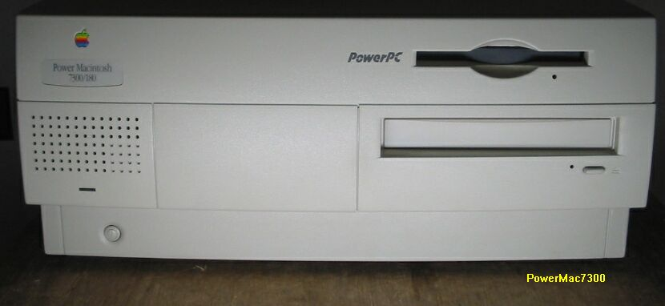

PowerMac7200/7300

この7200/7300は、最近、近所のパソコンショップのジャンクコーナに、本体のみで12800円 、の値札が付けられていたのを買ってきたものです。ロジックボードを交換済みで、
内容は以下のようになっていました。
・CPU PPC604e 166MHz （604e1800MHzに交換）
・HD SCSI 1GB+500MB （18GBに交換）
・CDROM SCSI 4倍速
・FDD
・RAM 16MB （80MBを追加し、96MB）
・VRAM 2MB
購入時は、すでにロジックボードが交換されていたので、ほとんど、何もやることがありま せんでした。7300のロジックボードでは、7200と電源が少し違うので、電源も交換されていました。
（2002/7/3記）
PPCマッキントッシュのページに戻る